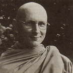

|
JOY IN SPIRITUAL  |
Venerable Tiradhammo (Ian Adams) was born in New Westminster, British
Columbia, in 1949. He spent some time at university, but left to undertake
a long overland trip in the Middle East, which culminated in a cycle
ride from Pakistan to Sri Lanka. He stayed for a fortnight at the Island
Hermitage in Sri Lanka, and spent a further month practising meditation
at Kanduboda Meditation Centre with Bhikkhu Sivoli. |
|
The following teaching has been adapted from a talk given by Venerable
Tiradhammo on the seventh day of a ten-day retreat in Switzerland, in
May 1988. The 'Seven Factors of Enlightenment' referred to in the talk
are mindfulness, investigation, energy, joy, relaxation, concentration
and equanimity. WE CAN SOMETIMES MAKE THE MISTAKE in practice of thinking that the religious life means some sort of self-flagellation. Or, we tend to believe that spiritual practice should result in some special kind of purity. With this idea we look at ourselves and, of course, all we see is impurity; having developed a concept of enlightenment, we examine our own minds and see just the opposite -- confusion and conflict. But the point is, these ideas we have about practice are just ideas. Thinking: 'I'm here and Nibbana is over there; I'm just a confused idiot and Nibbana is all purity and profundity,' is merely projecting onto concepts. When it comes down to real practice, enlightenment means actually being aware of confusion itself. Wisdom is that which is aware of ignorance. It's not a matter of knowing our wisdom, but of using wisdom to know ignorance! The whole practice of mindfulness is about realising the true nature of this being right here. We're not trying to plug into some kind of 'Nibbanic Wisdom' that's floating around in space or waiting for wisdom to fall into our laps. We are being aware of the nature of the human condition as it is. Once we really understand life as it is, then we can begin to transcend it. If we try to transcend it before we actually know it, we're merely caught up in illusion. Ajahn Chah used to say: 'First we have to pick things up before we can realise how heavy they are.' When we see how heavy they are, then that's seeing 'dukkha'. Having seen dukkha, we let go. When we've let go of things then we realise how light it actually is. 'Ah! What a relief.' And this is where joy comes in -- or piti as it's called in the 'Factors of Enlightenment'. There are various translations of this term piti. As there are various kinds of joy. We were talking yesterday about how, having been motivated by dukkha to seek the 'Way', we arrive at trust -- and this trust in turn conditions joy. So we have these various kinds of joy arising in practice from different causes, and, personally I've found reflecting upon them very useful. The point of joy and its function often seems to be missed when talking about spiritual training. Now piti is not just the pleasure of having a good time. But it's the kind of experience that leads to opening up to life -- to awakening. When there is joy, we are ready to discover new things. On the other hand, if we have already decided, 'life is suffering' and judged it as 'miserable', then we won't look any further. Consider children: notice how they observe and want to find out -- the fascination they have about things. Sadly, as adults, we've become too sophisticated to go around looking into flowers and little things. We function on a much more conceptual level. When we see a flower we think 'flower'. And then, 'Yes, I know all about flowers. I've seen flowers all my life and this is just another flower.' Actually, each flower is a unique flower: it is here, at this moment, this time, this place, this flower. If we can truly listen, for instance, to a bird singing; there is just sound. And that's quite different from thinking, 'Oh, another bird singing.' If we really listen, there is simply sound happening right in this moment, in this place, in this situation; and there is a knowing of that -- there's hearing. And that's a completely different reality from thinking 'bird singing'. If we are always falling back into concepts, then the internal dialogue goes chattering on: 'Bird singing. Flower over there. This person talking. I wish they'd be quiet. Candle burning...' and so on. And we think we know all about life! We continually juggle these concepts around in our heads and all they ever do is move from one side of the brain to the other -- out of the memory to be verbalised, then back again. If we live with only concepts of life, it can get pretty boring -- it's the same old words -- 'flower, bird, tree'. While it's natural that we learn and understand through language, and express our understanding through language, many of us have become prisoners of language. With meditation we have the opportunity now to bring about a profound change in our Western civilisation. We are trying to understand on a 'non-conceptual' level. In meditation we are realising the nature of experience directly. People who are completely identified with words may find this threatening, but we're not talking about by-passing words altogether; we still have to express ourselves; we still need to communicate. But we should recognise that the words we use in communication are not the same as the experience we are attempting to convey. Such little space is given in our society to silence. Words have become so loud and so powerful these days that sometimes that is all we hear. But it is the very space of silence that gives us access to, and nurtures, another way of relating. How wonderful to be like a child again and not be limited by words! In the beginning, children don't have a word for a flower. 'What is this?' they enquire. And we tell them: 'It's a flower.' So okay, they have to learn to communicate, but maybe we should try saying, 'Well, it's called a flower, but that's not what it really is. It has it's own perfect nature which is just-the-way-it-is.' To know this 'just-the-way-it-is' is to know joy. And knowing joy means we can bring back to life many of those beautiful qualities that have become drained out of us. We have a secret key now that will help free us from our habits. The quality of joy can also be developed further. Beyond piti or spiritual joy there is a much more stable quality known as sukha. Generally, this term sukha is translated merely as happiness -- the opposite of dukkha -- but that's not enough. Momentary happiness in like a butterfly that flitters around. It's certainly OK, but it's not the profound quality of well-being that is meant by sukha. Through having lived so much in concepts, our life has become boring, and fleeting excitement has come to appear as important to us. Sukha, on the other hand, means: 'Everything is just fine.' It's a sense of calm and well-being which pervades our whole body and mind. It makes the mind peaceful and collected, providing a firm foundation for samadhi -- concentration. But coming back to joy: joy is spontaneous. You can't preconceive it. You can't make it. It just arises in the moment. When there is true joy, you are in the moment. And joy in this way becomes a valuable reference point for us: if there is true joy, then we know we're in the moment, and if we are really in the moment, then there is true joy. So try to discover where joy comes from. See what supports it and what causes it to pass away. When we are doing this, we are beginning to cultivate joy as one of the 'Factors of Enlightenment'. It becomes one of the qualities that leads us to awakening. |
| Home Page |